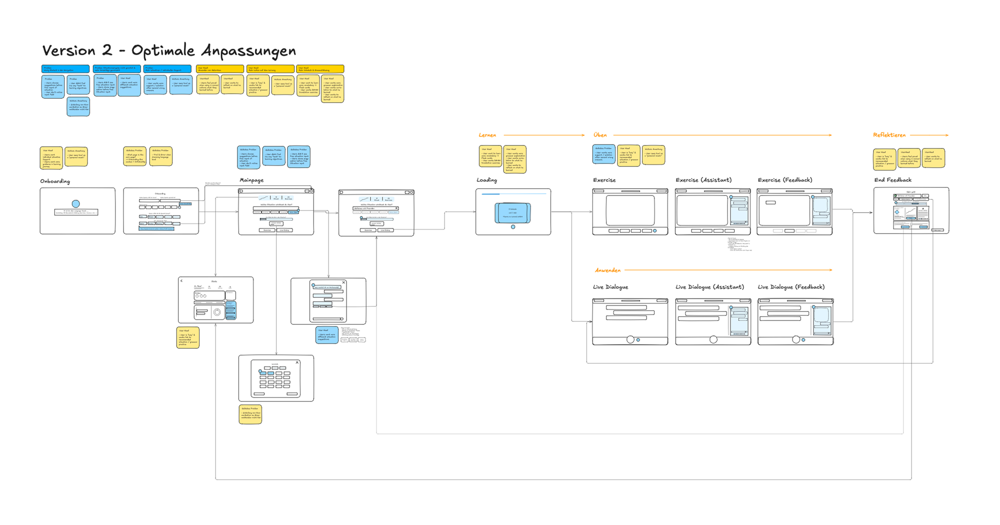
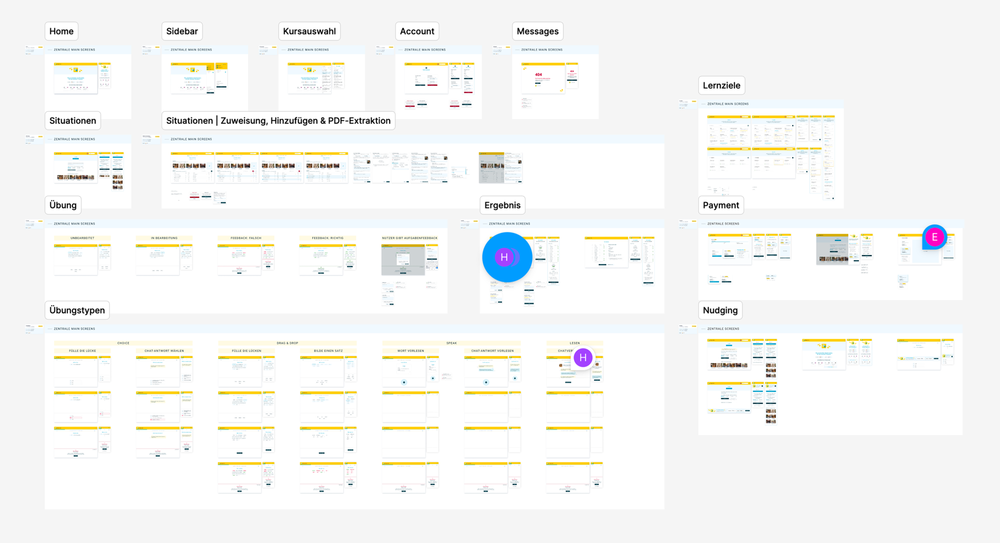
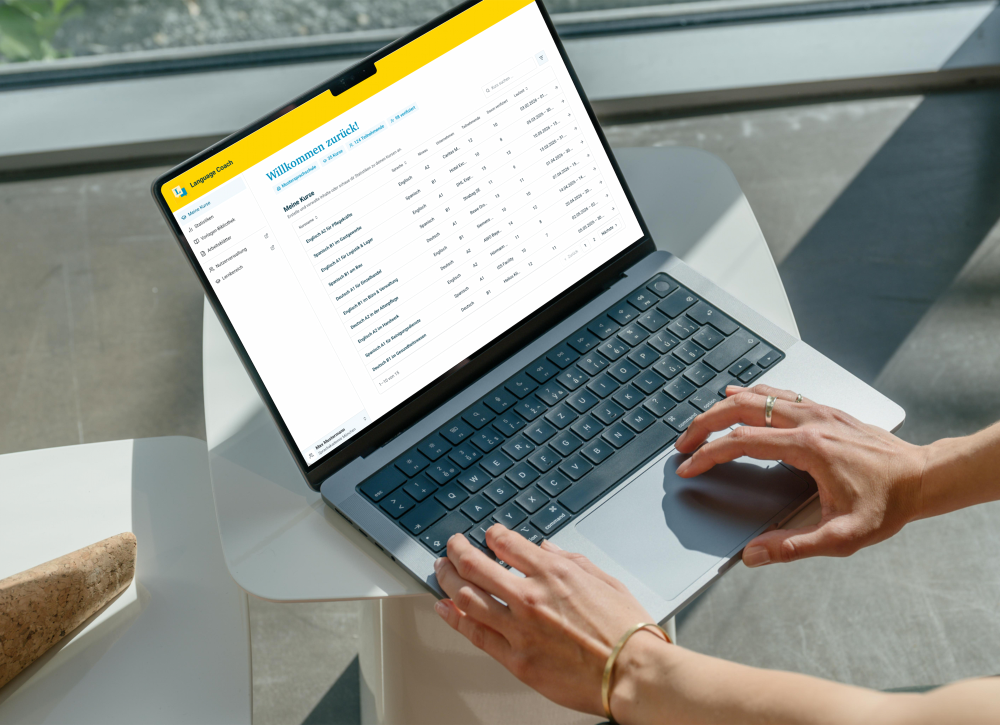

An AI-powered language learning platform delivering personalised, adaptive exercises for learners and full course management for teachers.

The existing product had grown over time: features accumulated, consistency suffered, and the needs of learners, teachers, and admins were not equally served. The goal was to clean up a complex, living platform while keeping all perspectives in balance.
.png)
Navigation issues had been building across quarters. Teachers described feeling "lost in the LLC universe", unable to orient themselves across multiple platforms. Learners struggled equally, finding the structure of the learning platform unclear. These insights made navigation the focus of the next research cycle.

All three roles, learner, teacher, and admin, were reworked. Based on research and workshop results, I sketched flow variants and feature priorities, aligned them with stakeholders, and moved into design sprints.

I explored and compared multiple flow variants for all three roles, weighing pros and cons before committing to a direction. The chosen flows were then translated into high-fidelity designs using a newly built component library, aligned with the company's updated CI.

Each flow was tested with real users, both long-term testers and new ones, using A/B testing to measure qualitative differences early. A vibe-coded prototype allowed usability issues to be fixed immediately after each session and variants to be tested flexibly within the same phase.

Features found their place, navigation became more intuitive and onboarding was refined. Paired with a targeted B2C marketing push, the impact was measurable: metadata comparisons showed a growing user base and rising subscription numbers after launch. Teachers in particular appreciate contributing directly to the design process.

ELLA – Lifelong Learning with AI

HMI for Driving Simulation

Mobile-First Car UX